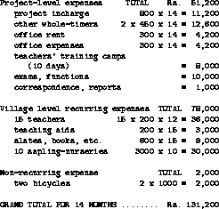

A report on our Kalahandi project
Priyadarsan Patra
A Philosophical Journey
Almost a year ago several of us undertook a poignant journey that we came to christen as the ``Kalahandi Bolangir Initiative'' . From the very beginning the spirit was young and willing, and the fellow sojouners came from many walks of life and many regions of the planet earth. Our goal was grand, a few times mistaken as grandiose. We wanted to have a movement of `participatory consciousness'. What it meant to us was to galvanize the people around us into becoming aware of the problems of human progress and into participating in a process that vigorously leads towards a more satisfying existence for people and their environment. We wished to attract the Indians living abroad towards the cause of `sustainable and equitable' development for the people in India. The first bunch among us to lead this journey turned out to be from Orissa and the fact that there has been very limited activism among non-resident Oriyas and that the political & economic condition of the people of Orissa has been traditionally weak made the choice of Orissa as the present focus of the group natural. The news about fresh outbreak of famine in the South-Western Orissa created the critical mass to think and act about poverty and progress there.The easy availability of electronic media provided the crucial communication link among these `new activists' while prior experience of some greatly facilitated the process.
This author last wrote `Anatomy of a famine and our role therein' which details the initial efforts of the group to translate the abstract consciousness about balanced human progress to one of participation in a concrete project of economic and educational development someplace in Kalahandi. Before I sketch our further efforts and results, I wish to stave off a few probable questions: The group hopes to expand its project activities gradually from this suffering southwestern Orissa to all of Orissa, and then to other parts of India. The group is not philosophically oriented nor materially equipped for providing relief or charity. Involvement is voluntary and not remunerated. The primary focus is to catalyze the beneficiaries' interest and involvement in their own economic development, political consciousness, functional education, and medical & environmental well-being through our projects, on one hand. On the other, we wish to discuss, debate and learn the issues of development, education, political equity, and environmental sustainability, and we hope to promote participatory consciousness among non-resident Oriyas and Indians, in general.
Our Kalahandi Project
Some people argue that poverty in Kalahandi, for example, is assiduously cultivated and marketed, while some others feel that there are no wide spread starvation deaths in Kalahandi-Koraput-Bolangir area. While there may be some truth in each of the propositions above, the fact remains that a vast majority of people suffer inhuman misery, perhaps short of death, and fail to be contributing and happy citizens of the world. They represent one of the starkest examples of neglect and absence of basic human rights to food, health-care, education, and shelter. According to a Hindustan Times article of Dec. 6, 1993, ``Even the most optimistic state statistics show that against a state average of 542 grams of food-grains consumption per day, in Kalahandi it was 263 and in Koraput 256 gms. That this was substantially food that is considered inedible by others is another aspect altogether.''We have long realized that indiscriminate and ill-thought pumping of external aid to the region could even pervert and deprave rather than bring succor. Therefore, we wish to promote grass-roots effort for a sustainable and equitable development and we chose Kalahandi area to be the ground for our first experiment. We also wanted to build on any existing local, non-governmental initiative in accord with ours. As such, we went through a long project solicitation, selection, and debating process and finally accepted an improved version of a project proposal from Akhil Bharatiya Vanvasi Kalyan Ashram (VKA), Sundargarh. We established a guideline for its funding, execution, monitoring and reporting. We scheduled for our colleague Dhanada K. Mishra of Michigan to visit VKA and the project area -- Lanjigarh block of M. Rampur tahasil in Kalahandi. The project calls for establishment of nearly 2 `multi-purpose, one-teacher' schools and 1 fruit-sapling nursery per panchayat in 9 of the 12 grama panchayats of Lanjigarh. VKA apparently draws inspiration and resources from Friends of Tribals Society (FTS) whose brochure states that the 70 million vanavasis (tribals) living in 50,000 Indian villages have average, annual family income less than $7, 12% literacy among men and 5% among women, while available health care is poor to non-existent. The brochure declares that FTS seeks to ``restore the forgotten dialogue between the mainstream and tribal cultures. ... to reclaim our Vanavasi brethren -- not by force, not by propaganda, not by interfering with their lives and traditions, but simply by improving their quality of life -- through education, through improved health-care, compassion and understanding.''
To bring you up-to-date, I excerpt some major points from our letter of project proposal acceptance to VKA:

Figure: Budget Estimate For Lanjigarh Project
``Sustainability, and self-sufficiency are the cornerstones of our philosophy. Hence we would strongly request you to include a few plant-nurseries and cut down a few village-schools in their place. We want to see people grow and take care of themselves and not be dependent on handouts. We also feel that it is better to do a few things well than to do a lot poorly. Therefore, we ask that you take up 15 `one-teacher schools' and 10 plant-nurseries attached to 10 of those schools. The nurseries should be built by the village beneficiaries themselves and should be tended by the students, too. Environment-friendly agro-techniques and development of means of earning through cooperative selling of produce/saplings should be properly emphasized.
...We need these progress reports (and later, annual audit report) on this project, to in turn prepare our own reports to the donors of this project. ...Brief monthly reports to us should list the names of people hired, travel expenses, supplies, constructions, names of schools and nurseries, the names of teachers, number of students, sale of saplings, AND an estimate of money you need for the next two months, etc.''
Trip to the project area
The following are some comments from Dhanada Mishra during our active discussion of his recent trip to Kalahandi (At a later time he may publish/post his long, fascinating travelogue):1. VKA's punctuality/promptness - I cannot over-emphasize how meticulous this group is in terms of being prompt and punctual in communication. Who ever I talked to in Orissa, they had only words of praise for them.
2.The three coordinators selected by VKA for our project are educated and energetic young men. They seemed to have a keen interest in the local problems and were involved in the village level youth clubs and so on. They are very eager to participate in the VKA project and hope to help educate the masses.
3. Regarding the two Ayurbedic doctors I met at VKA dispensaries.. I must say I was moved by their dedication. It is a fact that no MBBS degree holder would do the job they had taken up at very nominal compensation. I think its wonderful to have any doctor at all in areas such as these.. The doctor at Dhadel has saved many lives already in the few months he has been there!
4. The school at Kanya Ashram teaches the students along the prescribed syllabus of the Board of Education of Govt. of Orissa. There is no religious teachings as such. Sanskrit is taught purely as a language supplemented by learning of the Gita.
5. (Regarding a Girls' school run by VKA) ...I think the girls at this school get a very well rounded education. I clearly got the impression that more and more students are getting attracted by this school and they have grown considerably in last few years. ... I found that all of them were from tribal villages around the area. They were from very poor families and many were there simply because the ashram provided education, food, clothes all in return for working in the Ashram.
6. (About recent deaths of many people in a village due to cholera) Eventhough there were tube wells around, the local people didn't like the water of the tube well because of the smell of iron and would rather drink the water from the drain. Thus, lack of education and awareness was the biggest problem.
Epilogue
We now have an independent, official, mostly-student organization named Sustainable Economic and Educational Development Society (SEEDS) to strive towards the realization of the goals mentioned in the prologue. Sustainability, Equity, and Decentralization are the philosophical basis of the kind of development SEEDS promotes.We have made two bi-monthly installments to the Lanjigarh project which is reported to have completed the teachers' selection and training phase.
We have also arranged a 21-day training program at Dr. Parameswara Rao's Bhagavatula Charitable Trust (BCT). In July, 1994 five young volunteers from different parts of Orissa will have started their training at BCT in the modes and methods of sustainable, grass-roots development.
In another development, we are exploring the possibility of using a new low-cost, high-growth, bio-essential-laden fertilizer on some land collectively owned by villagers. The fertilizer, made from industrial fly-ash and city sewer sludge, was developed and tested by a non-profit group of researchers.
Finally, our heart-felt thanks to the people who have
contributed to this significant effort in various ways. Yet, we feel
the accute need for larger participation from you.
The goals of SEEDS are as much achievable as our collective commitment is,
for no single individual will have the ability or the resources to achieve
them. If you would like to help or you have comments, please contact
any member of SEEDS. Please send any contributions directly to SEEDS,
Texas Union Box 313, The University of Texas At Austin, Austin, Tx 78713, USA.
The author may be reached at:
3453-D Lk Austin Blvd, Austin, Tx 78703, USA
(Ph: 512-476-7803, darshan@cs.utexas.edu).
Priyadarsan Patra